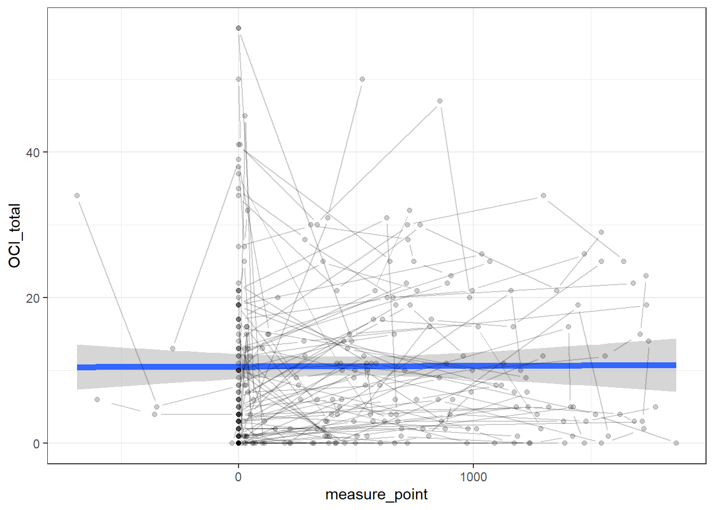
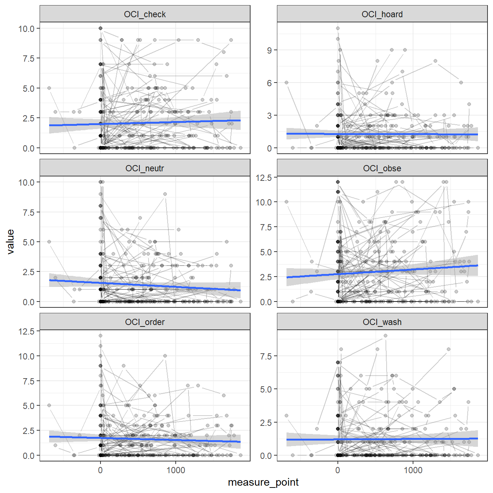
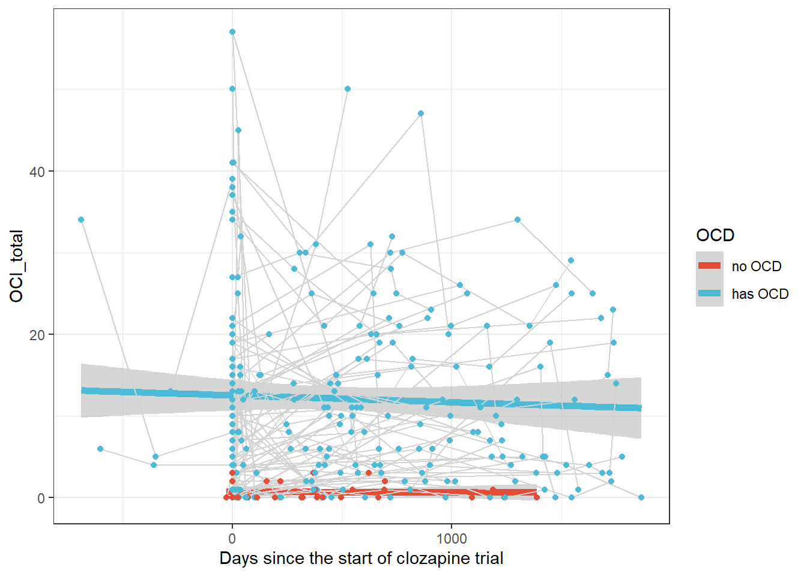
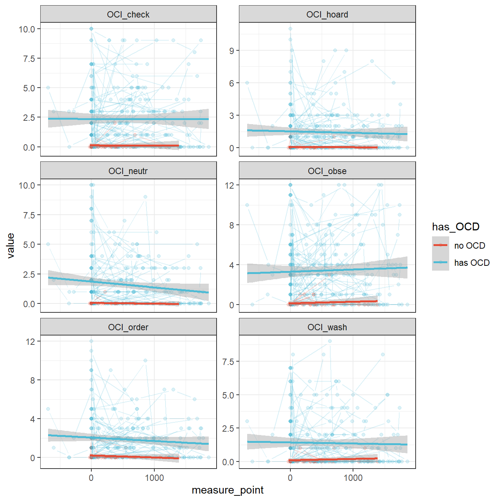
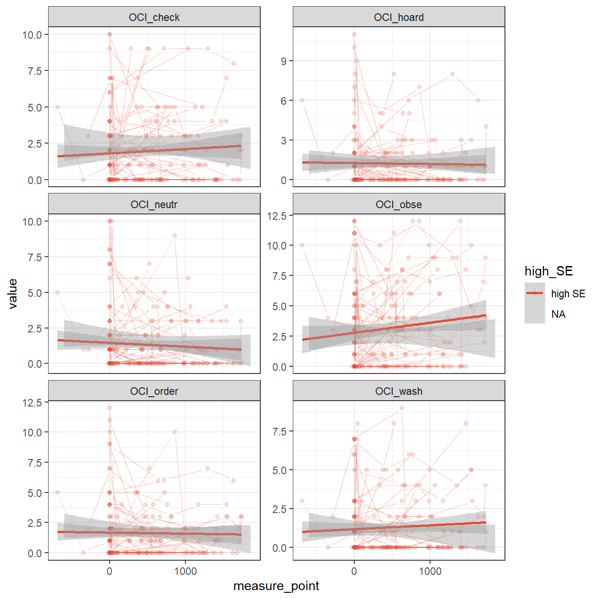
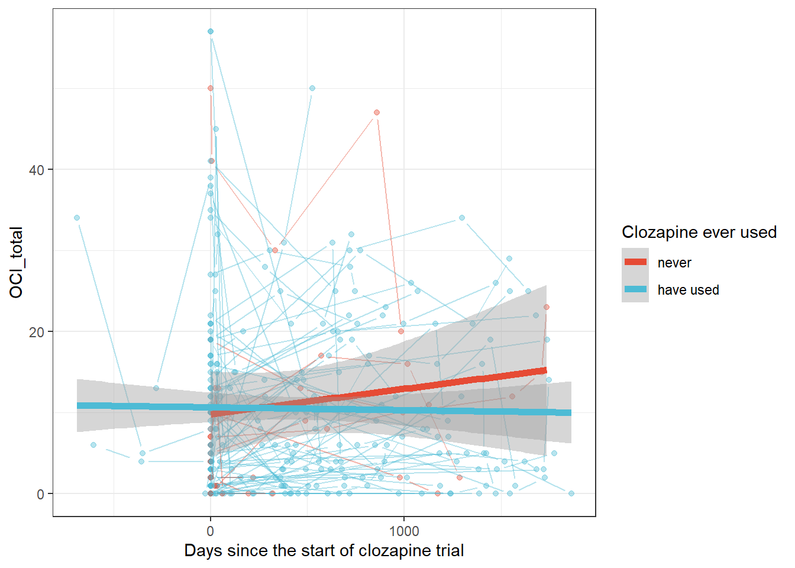
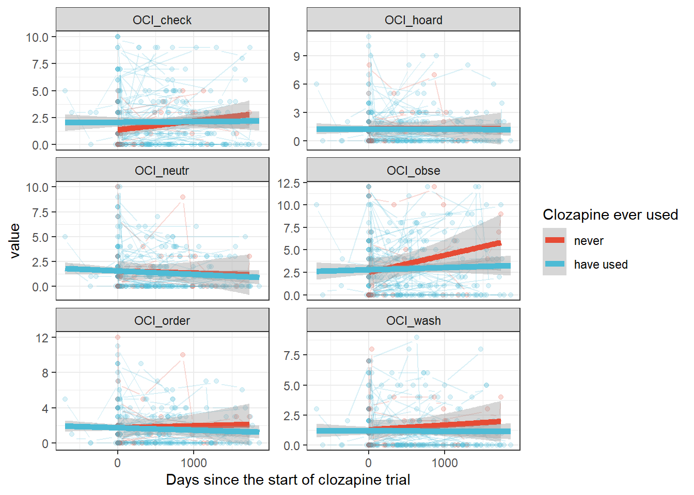
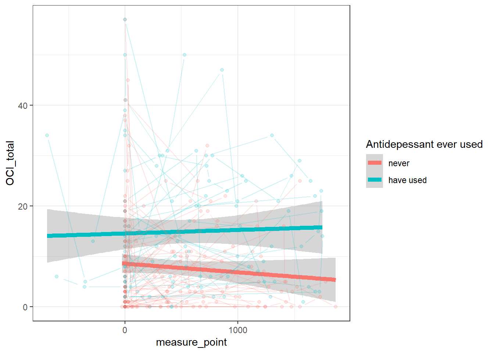
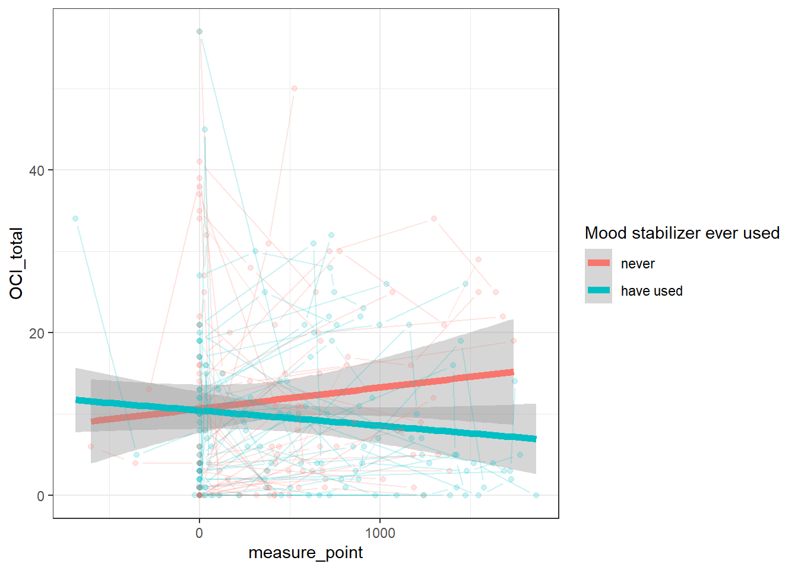
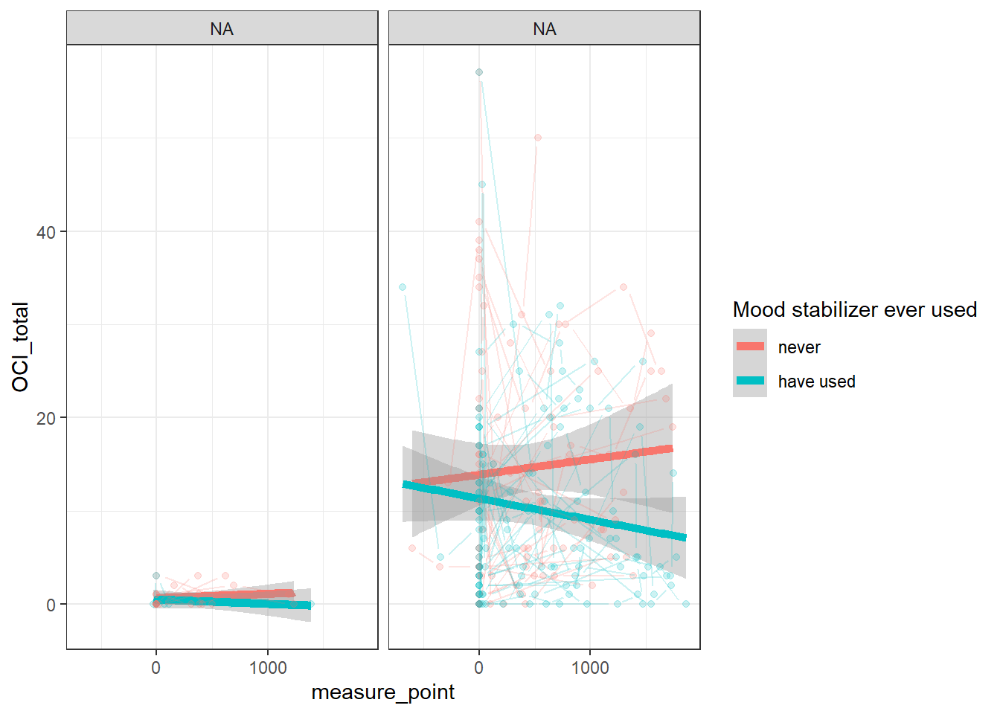

Temporal change of OCIR scores
Last updated: 2019-12-06
Checks: 7 0
Knit directory: wflow_OCIR/
This reproducible R Markdown analysis was created with workflowr (version 1.5.0). The Checks tab describes the reproducibility checks that were applied when the results were created. The Past versions tab lists the development history.
Great! Since the R Markdown file has been committed to the Git repository, you know the exact version of the code that produced these results.
Great job! The global environment was empty. Objects defined in the global environment can affect the analysis in your R Markdown file in unknown ways. For reproduciblity it’s best to always run the code in an empty environment.
The command set.seed(20191203) was run prior to running the code in the R Markdown file. Setting a seed ensures that any results that rely on randomness, e.g. subsampling or permutations, are reproducible.
Great job! Recording the operating system, R version, and package versions is critical for reproducibility.
Nice! There were no cached chunks for this analysis, so you can be confident that you successfully produced the results during this run.
Great job! Using relative paths to the files within your workflowr project makes it easier to run your code on other machines.
Great! You are using Git for version control. Tracking code development and connecting the code version to the results is critical for reproducibility. The version displayed above was the version of the Git repository at the time these results were generated.
Note that you need to be careful to ensure that all relevant files for the analysis have been committed to Git prior to generating the results (you can use wflow_publish or wflow_git_commit). workflowr only checks the R Markdown file, but you know if there are other scripts or data files that it depends on. Below is the status of the Git repository when the results were generated:
Ignored files:
Ignored: .Rhistory
Ignored: .Rproj.user/
Ignored: analysis/01_data_preprocessing.nb.html
Ignored: analysis/02_basic_analysis.nb.html
Ignored: analysis/03_change_OCIR.nb.html
Ignored: analysis/04_change_LUNSERS.nb.html
Ignored: analysis/05_change_PANSS.nb.html
Ignored: analysis/06_interrelation.nb.html
Ignored: analysis/07_LME_modeling.nb.html
Ignored: analysis/08_bnlearn_modeling.nb.html
Untracked files:
Untracked: 06_interrelation.Rmd
Untracked: 06_interrelation.nb.html
Untracked: data/data.csv
Untracked: data/data.rds
Untracked: data/data_transformed.rds
Untracked: data/ocir_raw_data.csv
Note that any generated files, e.g. HTML, png, CSS, etc., are not included in this status report because it is ok for generated content to have uncommitted changes.
There are no past versions. Publish this analysis with wflow_publish() to start tracking its development.
suppressPackageStartupMessages({
library(tidyverse)
library(glue)
library(moonBook)
library(anselmEDA)
library(here)
library(patchwork)
library(knitr)
library(ggsci)
library(lemon)
})
theme_set(theme_bw())Load data
data <- readRDS(paste0(here(), "/data/data.rds"))OCIR의 변화 양상
OCIR_total의 변화양상
data %>% ggplot(aes(measure_point, OCI_total)) +
geom_smooth(size=2, se=T, method="lm") +
geom_pointline(aes(group=hosp_id), alpha=0.2) +
scale_color_npg() * 전혀 변화없다.
OCIR subscales의 변화
data_long <- data %>%
pivot_longer(cols = starts_with("OCI"), names_to = "subscale", values_to = "value")
data_long %>%
filter(subscale != "OCI_total") %>%
ggplot(aes(measure_point, value)) +
geom_pointline(aes(group=hosp_id), alpha=0.2) +
geom_smooth(method = "lm") +
facet_wrap(vars(subscale), ncol = 2, scales = "free_y") +
scale_color_npg() * 변화가 잘 눈에 띄지 않는다.
환자들의 has_OCD 여부에 따른 OCIR_total의 변화 양상
data %>% ggplot(aes(measure_point, OCI_total,
color=has_OCD)) +
geom_smooth(size = 2, se = T, method = "lm") +
geom_line(aes(group = hosp_id), color = "lightgray") +
geom_point() +
scale_color_npg() +
guides(color=guide_legend("OCD")) +
xlab("Days since the start of clozapine trial")
환자들의 has_OCD 여부에 따른 OCIR subscales의 변화 양상
data_long <- data %>%
pivot_longer(cols = starts_with("OCI"), names_to = "subscale", values_to = "value")
data_long %>%
filter(subscale != "OCI_total") %>%
ggplot(aes(measure_point, value, color = has_OCD)) +
geom_pointline(aes(group=hosp_id), alpha=0.2) +
geom_smooth(method = "lm") +
facet_wrap(vars(subscale), ncol = 2, scales = "free_y") +
scale_color_npg() * 다른 것은 별 변화없는데, OCI_hoard, OCI_neutr, OCI_order는 감소하고, OCI_obse, OCI_wash는 증가한다. * 그런데 왜 OCD가 없는 환자들의 OCI_obse가 증가하지요??
LUNSERS(+) 여부에 따른 OCIR의 변화 양상
data %>% ggplot(aes(measure_point, OCI_total,
color=high_SE)) +
geom_smooth(size = 2, se = T, method = "lm") +
geom_line(aes(group = hosp_id), color = "lightgray") +
geom_point() +
scale_color_npg() +
xlab("Days since the start of clozapine trial")Warning: Removed 85 rows containing missing values (geom_point). * 뚜렷한 것은 high SE는 OCIR도 높다는 것. 하지만 high, low 여부에 따라서는 OCIR의 변화 양상이 달라지지는 않음
* 뚜렷한 것은 high SE는 OCIR도 높다는 것. 하지만 high, low 여부에 따라서는 OCIR의 변화 양상이 달라지지는 않음
data_long <- data %>%
pivot_longer(cols = starts_with("OCI"), names_to = "subscale", values_to = "value")
data_long %>%
filter(subscale != "OCI_total") %>%
ggplot(aes(measure_point, value, color = high_SE)) +
geom_pointline(aes(group=hosp_id), alpha=0.2) +
geom_smooth(method = "lm") +
facet_wrap(vars(subscale), ncol = 2, scales = "free_y") +
scale_color_npg()Warning: Removed 510 rows containing missing values (geom_point_line).
- high SE에서 OCI_obse가 점점 증가한다는 정도….?
Clozapine 사용 여부에 따른 OCIR의 변화 양상
- 하지만 clozapine 비사용군의 숫자가 적어 비교하는 의미가 없음.
data %>% ggplot(aes(measure_point, OCI_total,
color = factor(cloz_ever,
labels = c("never", "have used")))) +
geom_pointline(aes(group = hosp_id), alpha = 0.4) +
geom_smooth(size = 2, se = T, method = "lm") +
scale_color_npg() +
guides(color=guide_legend("Clozapine ever used")) +
xlab("Days since the start of clozapine trial") * 오히려 clozapine을 안 쓴 군이 더 시간이 지나면서 증가하는 역설적인 상황
data_long %>%
filter(subscale != "OCI_total") %>%
ggplot(aes(measure_point, value,
color = factor(cloz_ever,
labels = c("never", "have used")))) +
geom_pointline(aes(group=hosp_id), alpha=0.2) +
geom_smooth(size = 2, se = T, method = "lm") +
scale_color_npg() +
guides(color=guide_legend("Clozapine ever used")) +
facet_wrap(vars(subscale), ncol=2, scales='free_y') +
xlab("Days since the start of clozapine trial")
Antidepressant 사용 여부에 따른 OCIR의 변화 양상
data %>%
ggplot(aes(measure_point, OCI_total,
color=factor(antidepressant_ever,
labels=c("never", "have used")))) +
geom_smooth(method="lm", size=2) +
geom_pointline(aes(group=hosp_id), alpha=0.2) +
scale_color_discrete("Antidepessant ever used") * Antidepressant를 사용해도 OCIR의 호전은 기대하기 어려움. 오히려 antipressant를 사용하지 않은 군은 점점 점수가 떨어짐. 즉 antidepressant가 오히려 방해를 ???
OCD_labels <- c(`TRUE`="has OCD", `FALSE`="no OCD")
data %>%
ggplot(aes(measure_point, OCI_total,
color=factor(antidepressant_ever,
labels=c("never", "have used")))) +
geom_smooth(method="lm", size=2) +
geom_pointline(aes(group=hosp_id), alpha=0.2) +
scale_color_npg() +
guides(color=guide_legend("Antidepressant ever used")) +
facet_wrap(vars(has_OCD), labeller = as_labeller(OCD_labels)) * 눈에 띄는 것은 OCD가 없는 환자에서 antidepressant를 사용하면 오히려 OCIR이 증가하고, OCD(+)인 환자군에서는 회복을 방해한다는 것.
* 눈에 띄는 것은 OCD가 없는 환자에서 antidepressant를 사용하면 오히려 OCIR이 증가하고, OCD(+)인 환자군에서는 회복을 방해한다는 것.
Mood stabilizer 사용 여부에 따른 OCIR의 변화 양상
data %>% filter(cloz_ever==1) %>%
ggplot(aes(measure_point, OCI_total,
color=factor(mood_stabilizer_ever,
labels=c("never", "have used")))) +
geom_smooth(method="lm", size=2) +
geom_pointline(aes(group=hosp_id), alpha=0.2) +
scale_color_discrete("Mood stabilizer ever used") * 왜 mood stabilizer를 쓰면 OCIR이 감소하지?
data %>% filter(cloz_ever==1) %>%
ggplot(aes(measure_point, OCI_total,
color=factor(mood_stabilizer_ever,
labels=c("never", "have used")))) +
geom_smooth(method="lm", size=2) +
geom_pointline(aes(group=hosp_id), alpha=0.2) +
scale_color_discrete("Mood stabilizer ever used") +
facet_wrap(vars(has_OCD), labeller = as_labeller(OCD_labels)) * 다시 실망스러운 결과, mood stabilizer를 써도 has OCD 군에서 증상을 악화시킨다.
sessionInfo()R version 3.6.1 (2019-07-05)
Platform: x86_64-w64-mingw32/x64 (64-bit)
Running under: Windows 10 x64 (build 19033)
Matrix products: default
locale:
[1] LC_COLLATE=English_United States.1252
[2] LC_CTYPE=English_United States.1252
[3] LC_MONETARY=English_United States.1252
[4] LC_NUMERIC=C
[5] LC_TIME=English_United States.1252
attached base packages:
[1] stats graphics grDevices utils datasets methods base
other attached packages:
[1] lemon_0.4.3 ggsci_2.9 knitr_1.26 patchwork_1.0.0
[5] here_0.1 anselmEDA_0.1.0 moonBook_0.2.3 glue_1.3.1
[9] forcats_0.4.0 stringr_1.4.0 dplyr_0.8.3 purrr_0.3.3
[13] readr_1.3.1 tidyr_1.0.0 tibble_2.1.3 ggplot2_3.2.1
[17] tidyverse_1.3.0
loaded via a namespace (and not attached):
[1] proto_1.0.0 ggstance_0.3.3 tidyselect_0.2.5
[4] lme4_1.1-21 RSQLite_2.1.4 htmlwidgets_1.5.1
[7] grid_3.6.1 jtools_2.0.1 munsell_0.5.0
[10] chron_2.3-54 smbinning_0.9 withr_2.1.2
[13] colorspace_1.4-1 rstudioapi_0.10 ROCR_1.0-7
[16] TTR_0.23-5 labeling_0.3 git2r_0.26.1
[19] mnormt_1.5-5 ordinal_2019.4-25 polyclip_1.10-0
[22] bit64_0.9-7 farver_2.0.1 rprojroot_1.3-2
[25] vctrs_0.2.0 generics_0.0.2 xfun_0.11
[28] R6_2.4.1 dlookr_0.3.12 bitops_1.0-6
[31] assertthat_0.2.1 promises_1.1.0 scales_1.1.0
[34] nnet_7.3-12 gtable_0.3.0 sandwich_2.5-1
[37] workflowr_1.5.0 rlang_0.4.2 zeallot_0.1.0
[40] splines_3.6.1 lazyeval_0.2.2 acepack_1.4.1
[43] broom_0.5.2 mosaicCore_0.6.0 checkmate_1.9.4
[46] yaml_2.2.0 abind_1.4-5 modelr_0.1.5
[49] backports_1.1.5 httpuv_1.5.2 quantmod_0.4-15
[52] Hmisc_4.3-0 inum_1.0-1 tools_3.6.1
[55] tcltk_3.6.1 psych_1.8.12 gplots_3.0.1.1
[58] kableExtra_1.1.0 RColorBrewer_1.1-2 ggformula_0.9.2
[61] ggridges_0.5.1 gsubfn_0.7 Rcpp_1.0.3
[64] plyr_1.8.4 base64enc_0.1-3 classInt_0.4-2
[67] rpart_4.1-15 sqldf_0.4-11 zoo_1.8-6
[70] haven_2.2.0 ggrepel_0.8.1 cluster_2.1.0
[73] fs_1.3.1 tinytex_0.17 magrittr_1.5
[76] data.table_1.12.6 openxlsx_4.1.3 reprex_0.3.0
[79] mvtnorm_1.0-11 mitml_0.3-7 sjmisc_2.8.2
[82] hms_0.5.2 RcmdrMisc_2.5-1 evaluate_0.14
[85] xtable_1.8-4 DMwR_0.4.1 rio_0.5.16
[88] readxl_1.3.1 gridExtra_2.3 compiler_3.6.1
[91] mice_3.6.0 KernSmooth_2.23-16 crayon_1.3.4
[94] minqa_1.2.4 htmltools_0.4.0 later_1.0.0
[97] Formula_1.2-3 libcoin_1.0-5 lubridate_1.7.4
[100] DBI_1.0.0 tweenr_1.0.1 sjlabelled_1.1.1
[103] corrplot_0.84 dbplyr_1.4.2 MASS_7.3-51.4
[106] boot_1.3-23 Matrix_1.2-18 car_3.0-5
[109] cli_1.1.0 gdata_2.18.0 parallel_3.6.1
[112] insight_0.7.1 pan_1.6 pkgconfig_2.0.3
[115] prettydoc_0.3.1 numDeriv_2016.8-1.1 foreign_0.8-72
[118] xml2_1.2.2 webshot_0.5.2 rvest_0.3.5
[121] digest_0.6.23 rmarkdown_1.18 cellranger_1.1.0
[124] htmlTable_1.13.3 nortest_1.0-4 curl_4.3
[127] gtools_3.8.1 jomo_2.6-10 nloptr_1.2.1
[130] lifecycle_0.1.0 nlme_3.1-142 jsonlite_1.6
[133] carData_3.0-3 viridisLite_0.3.0 pillar_1.4.2
[136] lattice_0.20-38 httr_1.4.1 survival_3.1-8
[139] xts_0.11-2 zip_2.0.4 pander_0.6.3
[142] bit_1.1-14 ggforce_0.3.1 class_7.3-15
[145] stringi_1.4.3 blob_1.2.0 moments_0.14
[148] partykit_1.2-5 latticeExtra_0.6-28 caTools_1.17.1.3
[151] memoise_1.1.0 ucminf_1.1-4 e1071_1.7-3